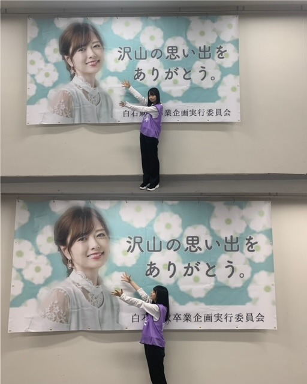
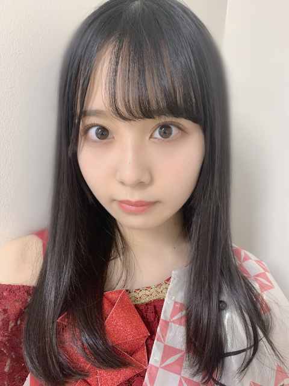
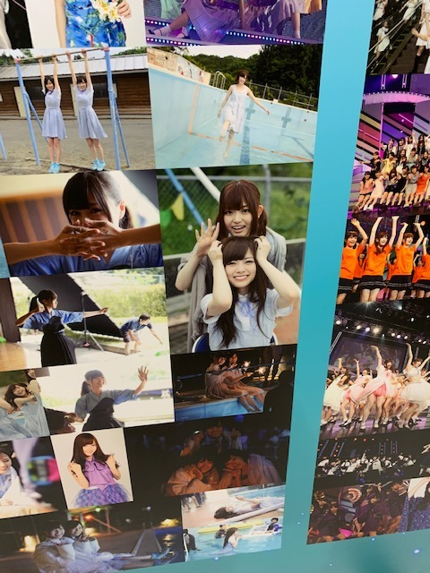
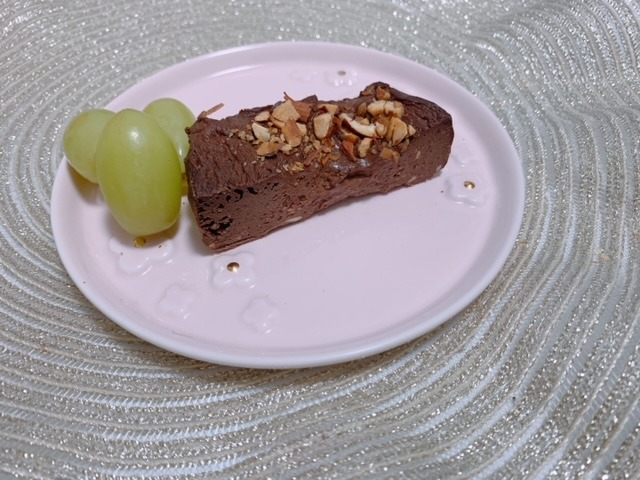

2020/1030Fri白石麻衣さん。佐藤璃果
白石麻衣さん卒業コンサート
「Mai Shiraishi Graduation Concert ~
Always beside you ~」
私にとって初めての先輩方とのライブは
白石さんの卒業コンサートになりました。
乃木坂46 （新）4期生 岩手県出身
佐藤璃果です。

白石麻衣さん、
ご卒業おめでとうございます。
私が白石さんに関われた時間は
本当に本当に短くて、。
それでも楽曲中に笑顔で迎えてくれる
白石さんは本当に優しくて。
ライブ中の白石さんの言葉に
何度も心を動かされました。
イヤモニから流れてくる、
白石さんの心が籠った透明な歌声に、
今まで以上に感動し、心を揺さぶられました。
初めての先輩方との現地でのリハは、
実は怖くて不安でした。
そんな中、
一人一人が白石さんの横に行き、
歌う時に目を合わせて笑って下さった時、
私も心の底から笑顔になれたし、
嬉しくてどうにかなりそうでした。
女神様です。
本番中、｢サヨナラの意味｣で
腰に回した手でポンポンとしてくれた時に
優しさが全身に巡って
顔が溶けました。
白石さんと一緒にステージに立たせて頂ける事が本当に嬉しくて、有難くて。
毎回毎回噛み締めていました。
白石さんと先輩方が笑っているだけで
幸せになれました。
白石さんと先輩方が泣いている時、
目に涙がたまりました。
もっと自分も成長して、
何らかの形で乃木坂46のために出来ることを
考えていきたいです。
笑顔も涙もあんなに美しい人はいません。
華麗な白石さん。ずっとずっと憧れです。
ずっと幸せな日々を送れますように。
もう上手く言葉に出来ないけど、
あの時間は不思議な時間で今思い返しても現実なのか自分で分かりません。
異世界にいたようなそんな気持ちです。
たくさん水色の綺麗な景色を見ました。
水色が輝いてみえる。
水色が尊く見える。
そんな時間でした。
最近テレビ番組でも披露されている
白石さんが好きだと言っていた楽曲。
｢今、話したい誰かがいる｣
中学生の時何度も何度も動画を見て
見よう見まねで踊っていました。
私もあの曲が大好きです。
"一人でいるのが 一番楽だった
誰かと一緒にいると 僕は僕じゃない"
"目の前にはいつもヒントがあり
紛れもない過去の答えがある
あきらめるなら一人でいいけど
夢を見るなら君と一緒がいい"
音楽も歌詞も大好きです

衣装キラキラ可愛いね。
こちらは｢世界で一番 孤独なLover｣
の時の衣装です。
ペアダンスのペアは黒見ちゃんとでした♡
衣装集、また載せますね。
皆さん、
これからも
どうぞよろしくお願いします。
大好きな乃木坂46がずっとずっと
続いていきますように。
自分も少しでも力になりたいです。
一緒に歩んで成長していきたいです。
もっと乃木坂の良さを
色んな方に知って欲しいです。
乃木坂を見て幸せになって欲しいです。

お気に入りです。( ¨̮ )
白石麻衣さん、ありがとうございました。
9年間おつかれ様でした。
これからも大好きです。
~~~~~~~~~~~~~~~~~~
〇10月30日、月刊エンタメさん 発売
ソログラビアが掲載されています❁
付録には私のポスターも付いてきます！
スタイル抜群の先輩、
梅澤美波さんが表紙です！
〇10月31日、ひかりTV・dTVチャンネルさん｢山崎怜奈とおはつちゃん｣
大好きなものに関する
お初の事に挑戦させて頂きました❁
山崎怜奈さんと沢山お話出来て本当に嬉しかったです。
よろしくお願い致します！
上記2つについて
また今度沢山お話させてくださいね。
オフショットも載せたいなぁー
~~~~~~~~~~~~~~~~~~~
今日は10月30日！
10月生まれの皆さん
お誕生日おめでとうございました。

今回の皆さんへの誕生日ケーキは、、、
クリームチーズとココアパウダーで、
"チョコレートチーズケーキ"
を作ってみました！
甘味料にラカントを使い、ヨーグルトも入っているので良いですね✌︎
真ん中らへんのちょっとレア具合が
好きです！
素敵な一年になりますように。
~~~~~~~~~~~~~~~~~~~
明日はるなぴです。
お疲れ様です！！！
~~~~~~~~~~~~~~~~~~
皆さんにとって
素敵な1日になりますように。
またね。
#37 りか

PROFILE
新4期生リレー
202104
| SUN | MON | TUE | WED | THU | FRI | SAT |
|---|---|---|---|---|---|---|
| 1 | 2 | 3 | ||||
| 4 | 5 | 6 | 7 | 8 | 9 | 10 |
| 11 | 12 | 13 | 14 | 15 | 16 | 17 |
| 18 | 19 | 20 | 21 | 22 | 23 | 24 |
| 25 | 26 | 27 | 28 | 29 | 30 | |

コメント(305)
おはよう
ブログありがとー
まいやんの卒コン
りかりんの頑張りもみれましたよん！
やっぱりパフォーマンスしている姿がステキなんです！
早く見たいね！！
今誰も是非パフォーマンスみてみたいです
儚げな表情も爽やかな空気感もぴったりす(o^^o)
ノギスキACT2も始まりますねー
三期先輩も加わって
より厚みが出てますが
りかりんもACT1同様楽しい姿を魅せてねん(^ ^)
いつも出ると、おっ！ってなるから(o^^o)
ではでは
あしたもはりきってまいりましょーー！！
ヽ(´▽｀)/
おはよう
今日ははじまたばかりすねー
さっき間違えたかな？
りかりんらしく
金曜日はりきってまいりましょーー！！
ヽ(´▽｀)/
ことだまになってー♪(´ε｀ )
今から新ブログにこめしにいくね！
【な な り か 167】
な な り か (夏希)より
コメントする